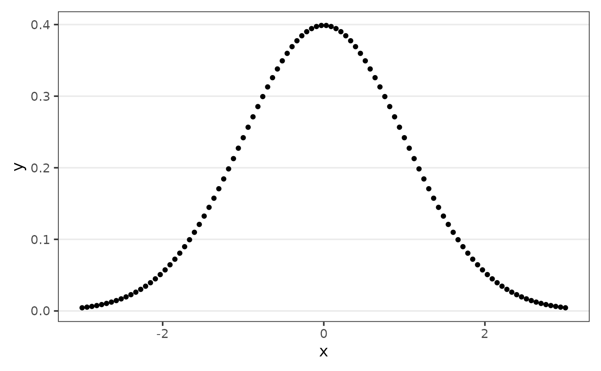
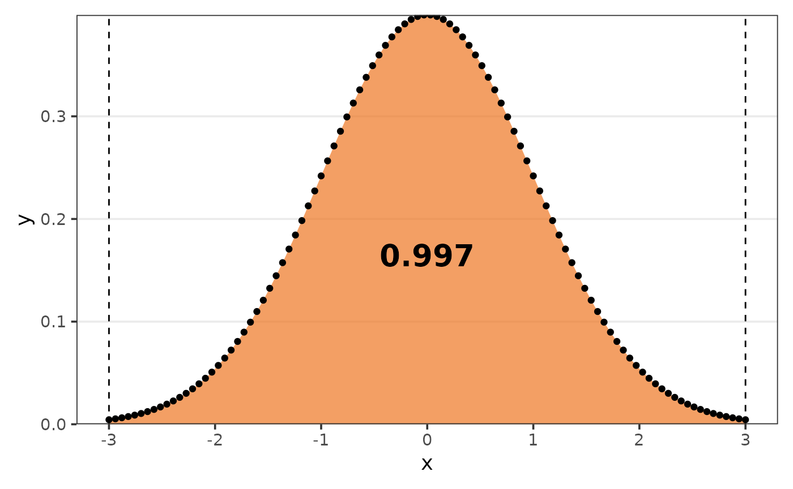
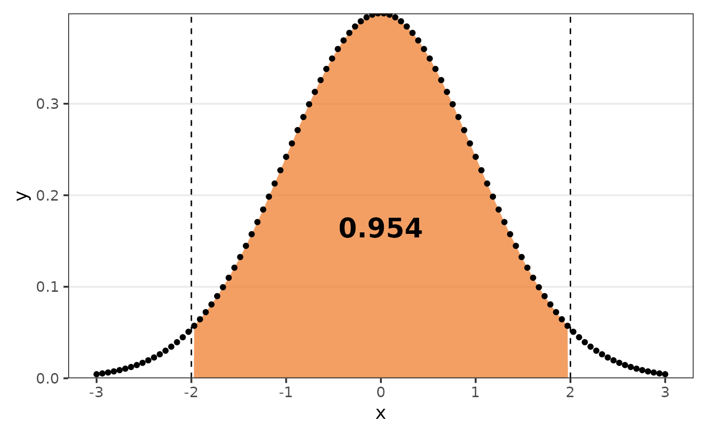
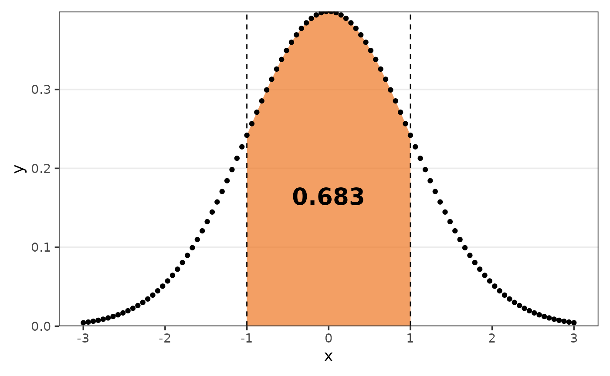
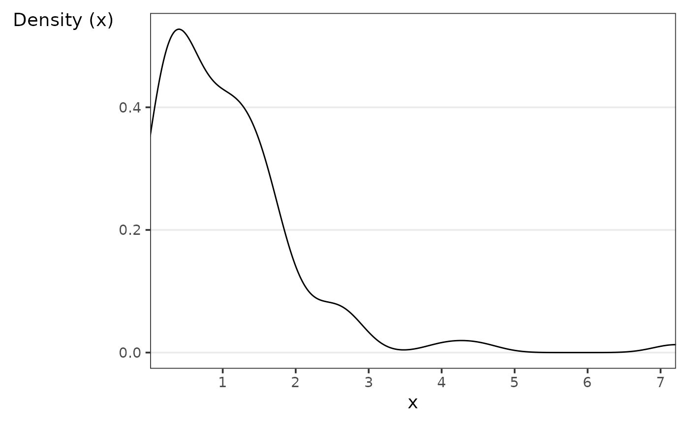

Functions calc_
functions_calc.Rmdcalc_ functions compute a certain value.
calc_acf
The goal of calc_acf is to compute the auto-correlation
function, given by:
\[\frac{\sum_\limits{t = k+1}^{n}(x_t - \bar{x})(x_{t-k} - \bar{x})}{\sum_\limits{t = 1}^{n} (x_t - \bar{x})^2 },\] where:
- \(x_t\) is a time series of length \(n\);
- \(x_{t-k}\) is a shifted time series by \(k\) units in time;
- \(\bar{x}\) is the average of the time series.
calc_acf(x)
#> # A tibble: 21 × 2
#> acf lag
#> <dbl> <dbl>
#> 1 1 0
#> 2 -0.0116 1
#> 3 0.0115 2
#> 4 0.0910 3
#> 5 0.0677 4
#> 6 0.0276 5
#> 7 0.116 6
#> 8 0.0585 7
#> 9 -0.0587 8
#> 10 0.147 9
#> # ℹ 11 more rowsIf you pass a second vector in the argument y the
cross-correlation will be computed instead:
\[\frac{n \left( \sum_\limits{t = 1}^{n}x_ty_t \right) - \left[\left(\sum_\limits{t = 1}^{n}x_t \right) \left(\sum_\limits{t = 1}^{n}y_t\right) \right]}{\sqrt{\left[n \left( \sum_\limits{t = 1}^{n}x_t^2 \right) - \left( \sum_\limits{t = 1}^{n}x_t \right)^2\right]\left[n \left( \sum_\limits{t = 1}^{n}y_t^2 \right) - \left( \sum_\limits{t = 1}^{n}y_t \right)^2\right]}},\] where:
- \(x_t\) is a time series of length \(n\);
- \(y_t\) is a time series of length \(n\).
calc_acf(x,y)
#> # A tibble: 33 × 2
#> ccf lag
#> <dbl> <dbl>
#> 1 0.00267 -16
#> 2 -0.146 -15
#> 3 0.109 -14
#> 4 -0.0132 -13
#> 5 0.0652 -12
#> 6 0.0414 -11
#> 7 -0.0920 -10
#> 8 -0.0612 -9
#> 9 0.0704 -8
#> 10 -0.0404 -7
#> # ℹ 23 more rowscalc_association
The goal of calc_association is to compute associations
metrics.
Contingency
Contingency is a measure of association between two nominal variables. I It ranges from 0 and 1, where 0 indicates no relationship and 1 indicates perfect association, and is given by:
\[\sqrt{\frac{X^2}{n+X^2}},\]
where:
- \(X^2\) the chi-square statistic;
- \(n\) is the sample size.
calc_association(mtcars$am,mtcars$vs,type = "contingency")
#> [1] 0.1660092Cramér’s V
Cramér’s V is a measure of association between two nominal variables. I It ranges from 0 and 1, where 0 indicates no relationship and 1 indicates perfect association, and is given by:
\[\sqrt{\frac{X^2}{n\min(r-1,c-1)}},\]
where:
- \(X^2\) the chi-square statistic;
- \(n\) is the sample size;
- \(r\) is the number of rows in the contingency table;
- \(c\) is the number of columns in the contingency table.
calc_association(mtcars$am,mtcars$vs,type = "cramers-v")
#> [1] 0.1042136Phi
Phi is a measure of association between two nominal dichotomous variables, considering a marginal table of the variables given by:
| y = 0 | y = 1 | Total | |
|---|---|---|---|
| x = 0 | \(n_{00}\) | \(n_{01}\) | \(n_{0.}\) |
| x = 1 | \(n_{10}\) | \(n_{11}\) | \(n_{1.}\) |
| Total | \(n_{.0}\) | \(n_{.1}\) | \(n\) |
Then the phi coefficient is given by:
\[\frac{n_{11}*n_{00} - n_{10}*n_{01} }{\sqrt{n_{1.}*n_{0.}*n_{.1}*n_{.0}}}.\]
calc_association(mtcars$am,mtcars$vs,type = "phi")
#> [1] 0.1700405calc_auc
The goal of calc_auc is to compute the area under a
curve (AUC).

The function default compute the area considering the range of
x.

But you can define the argument limits to get the AUC of
that respective range.


calc_correlation
The goal of calc_correlation is to compute associations
metrics.
Kendall
The Kendall correlation coefficient, also called Kendall’s Tau coefficient, quantifies the association between two ranked variables.
It was created by Maurice Kendall and is especially beneficial for analyzing non-linear relationships or ranked data. The coefficient is determined by counting the number of concordant pairs (same order of ranks) and discordant pairs (opposite order of ranks) in the data.
\[\frac{n_c-n_d}{\frac{1}{2}*n(n/1)},\] where:
- \(n_c\) is the number of concordant observations;
- \(n_d\) is the number of discordant observations;
- \(n\) is the number of observations.
calc_correlation(mtcars$hp,mtcars$drat,type = "kendall")
#> [1] -0.3826269Pearson
The Pearson correlation coefficient is a measure of the linear relationship between two continuous variables. It ranges from -1 to 1, indicating the strength and direction of the association.
A value of 1 represents a perfect positive linear relationship, -1 represents a perfect negative linear relationship, and 0 indicates no linear relationship.
\[\frac{\sigma_{xy}}{\sigma_x\sigma_y},\] where:
- \(\sigma_{xy}\) is the covariance of \(x\) and \(y\);
- \(\sigma_{x}\) is the variance of \(x\);
- \(\sigma_{y}\) is the variance of \(y\).
calc_correlation(mtcars$hp,mtcars$drat,type = "pearson")
#> [1] -0.4487591Spearmann
The Spearman correlation coefficient is a measure of the monotonic relationship between two variables, it assesses the strength and direction of the association, regardless of whether it is linear or non-linear.
It also ranges from -1 to 1, with 1 indicating a perfect monotonic relationship and -1 indicating a perfect inverse monotonic relationship. A value of 0 suggests no monotonic relationship.
\[1- \frac{6\sum\limits_{i=1}^{n}d_i^2}{n(n^2-1)},\]
where:
- \(d_i\) is the difference between the ranks of \(x\) and \(y\);
- \(n\) is the number of observations.
calc_correlation(mtcars$hp,mtcars$drat,type = "spearman")
#> [1] -0.520125calc_cv
The goal of calc_cv is to compute the coefficient of
variation (CV), given by:
\[\frac{s}{\bar{x}},\] where:
- \(s\) is the sample standard deviation;
- \(\bar{x}\) is the sample mean.
If you set the argument as_perc to TRUE,
the CV will be multiplied by 100.
calc_cv(x,as_perc = TRUE)
#> [1] 99.32calc_error
The goal of calc_cv is to compute the errors
metrics.
Mean Absolute Error (MAE)
MAE measures the average absolute difference between the predicted and actual values:
\[\frac{\sum\limits_{i=1}^{n}|X_i-Y_i|}{n}.\]
Mean Absolute Percentage Error (MAPE)
MAPE measures the average percentage difference between the predicted and actual values relative to the actual values:
\[\frac{\sum\limits_{i=1}^{n}\left|\frac{X_i-Y_i}{X_i}\right|}{n}.\]
Mean Squared Error (MSE)
MSE measures the average of the squared differences between the predicted and actual values:
\[\frac{\sum\limits_{i=1}^{n}(X_i-Y_i)^2}{n}.\]
calc_geometric_mean
The goal of calc_geometric_mean is to compute the
geometric mean, given by:
\[\sqrt[n]{\prod\limits_{i=1}^{n}x_i} = \sqrt[n]{x_1\times x_2 \times...\times x_n},\] where:
- \(x_i\) is a numeric vector of length \(n\).
calc_geometric_mean(x)
#> [1] 0.618602calc_harmonic_mean
The goal of calc_harmonic_mean is to compute the
harmonic mean, given by:
\[\frac{n}{\sum\limits_{i=1}^{n}\frac{1}{x_i}},\] where:
- \(x_i\) is a numeric vector of length \(n\).
calc_harmonic_mean(x)
#> [1] 0.17634calc_kurtosis
The goal of calc_kurtosis is to compute a kurtosis
coefficient.
calc_kurtosis(x = x)
#> [1] -2.934065Biased
The biased kurtosis coefficient, is given by:
\[\frac{\sum\limits_{i=1}^n(x_i - \bar{x})^4}{n*s_x^4},\]
where:
- \(x_i\) is a numeric vector of length \(n\);
- \(\bar{x}\) is the mean of \(x\);
- \(s_x\) is the standard deviation of \(x\).
calc_kurtosis(x = x,type = "biased")
#> [1] 14.81846Excess
The excess kurtosis coefficient, is given by:
\[\frac{\sum\limits_{i=1}^n(x_i - \bar{x})^4}{n*s_x^4}-3,\]
where:
- \(x_i\) is a numeric vector of length \(n\);
- \(\bar{x}\) is the mean of \(x\);
- \(s_x\) is the standard deviation of \(x\).
calc_kurtosis(x = x,type = "excess")
#> [1] 11.81846Percentile
The percentile kurtosis coefficient, is given by:
\[\frac{Q_3-Q_1}{P_{90}-P_{10}},\] where:
- \(Q_1\) is the first quartile;
- \(Q_3\) is the third quartile;
- \(P_{90}\) is the 90th percentile;
- \(P_{10}\) is the 10th percentile.
calc_kurtosis(x = x,type = "percentile")
#> [1] 0.3177264Unbiased
The unbiased kurtosis coefficient, is given by:
\[\frac{(n+1)*n}{(n-1)*(n-2)*(n-3)}*\frac{\sum\limits_{i=1}^n(x_i - \bar{x})^4}{n*s_x^4} - 3*\frac{(n-1)^2}{(n-2)*(n-3)},\]
where:
- \(x_i\) is a numeric vector of length \(n\);
- \(\bar{x}\) is the mean of \(x\);
- \(s_x\) is the standard deviation of \(x\).
calc_kurtosis(x = x,type = "unbiased")
#> [1] -2.934065calc_modality
The goal of calc_modality is to compute the number of
modes.
calc_modality(x = c("a","a","b","b"))
#> [1] 2calc_mode
The goal of calc_mode is to compute the mode.
set.seed(123);cat_var <- sample(letters,100,replace = TRUE)
table(cat_var)
#> cat_var
#> a b c d e f g h i j k l m n o p q r s t u v w y z
#> 1 2 5 2 4 3 6 4 5 4 3 3 3 6 4 3 3 3 4 3 4 8 3 10 4We can see that the letter “y” is the one that appears the most, so it is the mode of the variable.
calc_mode(cat_var)
#> [1] "y"calc_peak_density
The goal of calc_peak_density is to compute the peak
density value of a numeric value.

Let’s say we eant to discover what value is the peak in the density above.
calc_peak_density(x)
#> [1] 0.3901813
calc_skewness
The goal of calc_skewness is to compute a skewness
coefficient.
calc_skewness(x = x)
#> [1] 2.74827Where different types of coefficients are provided, they are:
Bowley
The Bowley skewness coefficient, is given by:
\[\frac{Q_3+Q_1-2Q_2}{Q_3-Q_1},\] where:
- \(Q_1\) is the first quartile;
- \(Q_2\) is the second quartile;
- \(Q_3\) is the third quartile.
calc_skewness(x = x,type = "bowley")
#> [1] 0.07563213Fisher-Pearson
The Fisher-Pearson skewness coefficient, is given by:
\[\frac{\sum_\limits{i=1}^{n}(x_i - \bar{x})^3}{n*(s_x)^3},\]
where:
- \(\bar{x}\) is the mean of \(x\);
- \(x_i\) is a numeric vector of length \(n\);
- \(s_x\) is the standard deviation of \(x\).
calc_skewness(x = x,type = "fisher_pearson")
#> [1] 2.74827Kelly
The Kelly skewness coefficient, is given by:
\[\frac{P_{90}+P_{10}-2Q_2}{P_{90}-P_{10}},\] where:
- \(P_{90}\) is the 90th percentile;
- \(Q_2\) is the second quartile, i.e., \(P_{50}\);
- \(P_{10}\) is the 10th percentile;
calc_skewness(x = x,type = "kelly")
#> [1] 0.1755126Pearson median
The Pearson median skewness coefficent, or second skewness coefficient, is given by:
\[\frac{3(\bar{x}- \tilde{x})}{s_x},\]
where:
- \(\bar{x}\) is the mean of \(x\);
- \(\tilde{x}\) is the median of \(x\);
- \(s_x\) is the standard deviation of \(x\).
calc_skewness(x = x,type = "pearson_median")
#> [1] 0.5718116Rao
The Rao skewness coefficient, is given by:
\[\frac{[n/(n-1)](\bar{x}- \tilde{x})}{\sqrt{(n-2)/n}},\]
where:
- \(\bar{x}\) is the mean of \(x\);
- \(\tilde{x}\) is the median of \(x\);
- \(n\) is the length of \(x\).
calc_skewness(x = x,type = "rao")
#> [1] 0.2019945